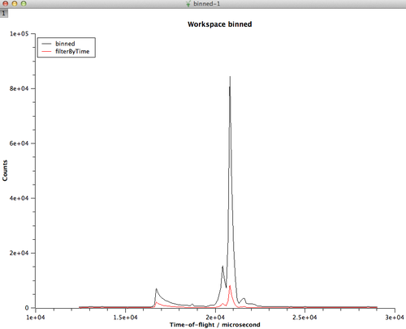

Exercises¶
Exercise 1¶
Load the EventWorkspace HYS_11388_event.nxs
Sum across each spectra in the workspace using the SumSpectra algorithm. Set the OutputWorkspace to be called Sum
Rebin this grouped workspace, specify OutputWorkspace to binned and that the bin width is 100 microseconds, and keep PreserveEvents ticked
Right-click the workspace called binned and choose the Plot Spectrum option. Once the graph is plotted, leave do not delete it
Events in a EventWorkspace may get filtered according to other recorded events during the experiments. At perhaps the simplest level you can filter out events between specific times. Use algm-FilterByTime for this. It has a parameter called StartTime, which is the start time, in seconds, since the start of the run. Events before this time are filtered out. Run FilterByTime with StartTime=4000 and call the OutputWorkspace FilteredByTime
Drag the workspace FilteredByTime into the plot where workspace binned is plotted. What you should see now is 
Replay by the steps used to create the FilteredByTime workspace from the history of this workspace
{kind=link}
Exercise 2¶
Using the Binned workspace from the previous example as the InputWorkspace, use FilterByLogValue with LogName=proton_charge, MinimumValue=17600000, MaximumValue=17890000
Overplot the OutputWorkspace over your existing plots from the previous example
Run FilterBadPulses with InputWorkspace=Binned and LowerCutoff=99.999
Overplot the OutputWorkspace over your existing plots
{kind=link}
Exercise 3¶
Load the same workspace used in Exercise 1, but this time perform the same filtering achieved in Exercise 1 as part of the Loading
SumSpectra on your new workspace
Use RebinToWorkspace to achieve the same binning as the existing Binned workspace
Plot both your newly rebinned workspace and FilteredByTime created in exercise 1 on a new plot.
{kind=link}